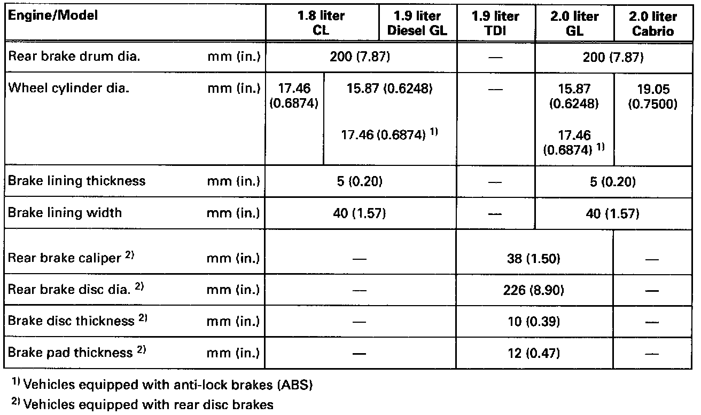
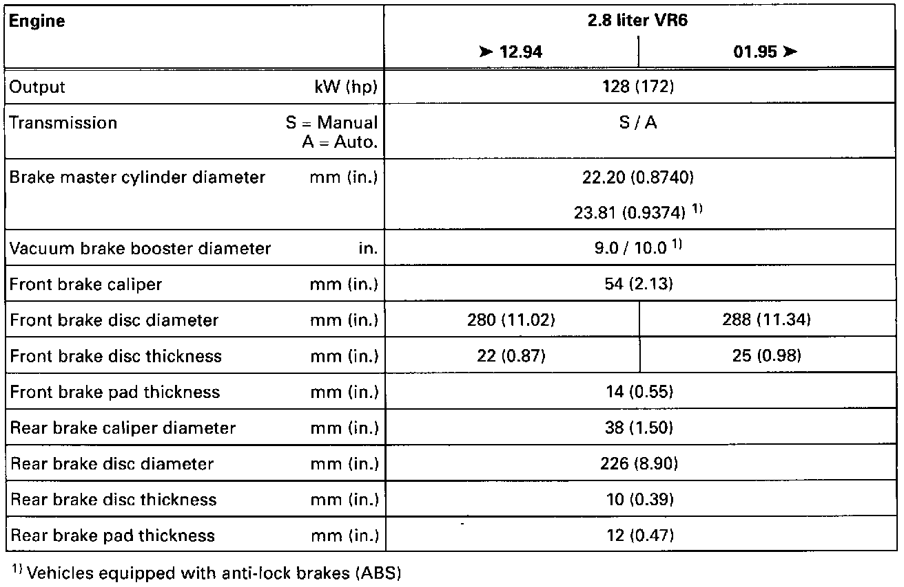

Brake Caliper: Specifications
Using the tables below, locate the appropriate information
Models With Base Suspension
Base Suspension Brake Component List (Part 1 Of 2):

Base Suspension Brake Component List (Part 2 Of 2):

Models With Plus Suspension
Plus Suspension Brake Component List:
